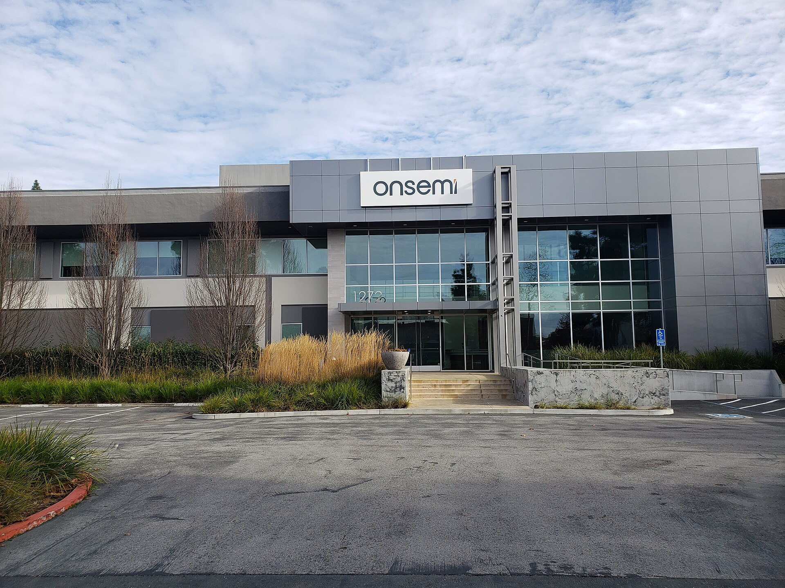
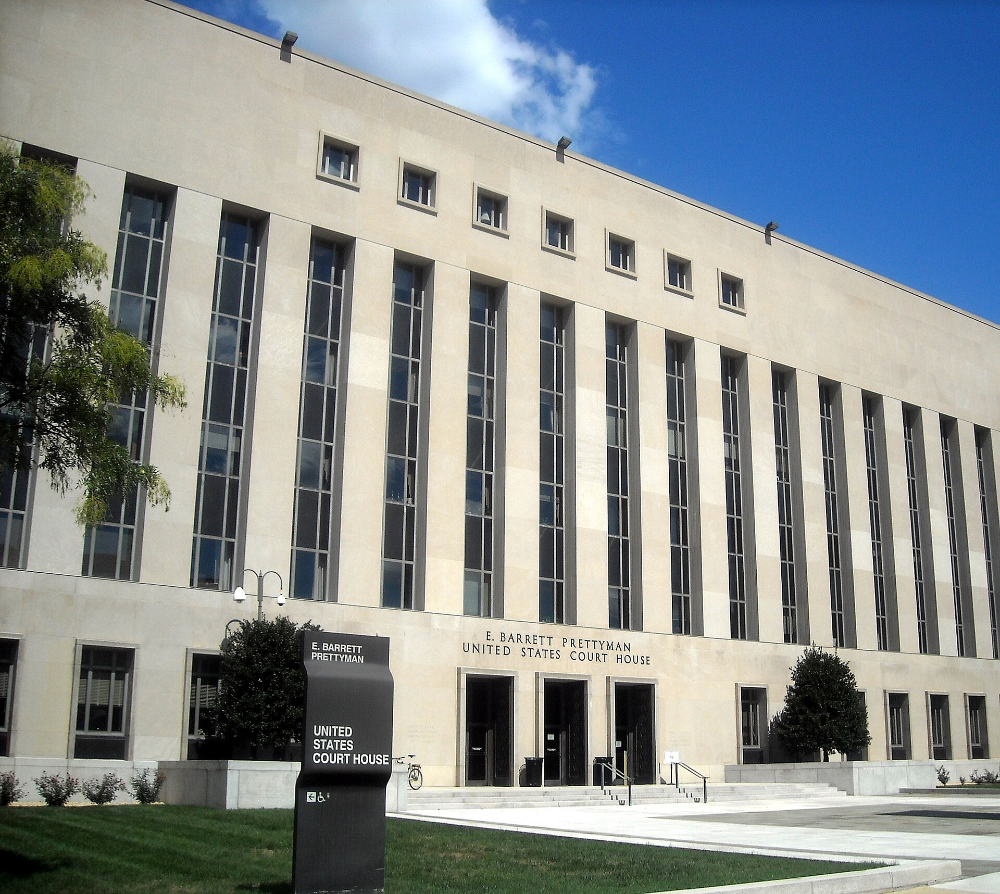
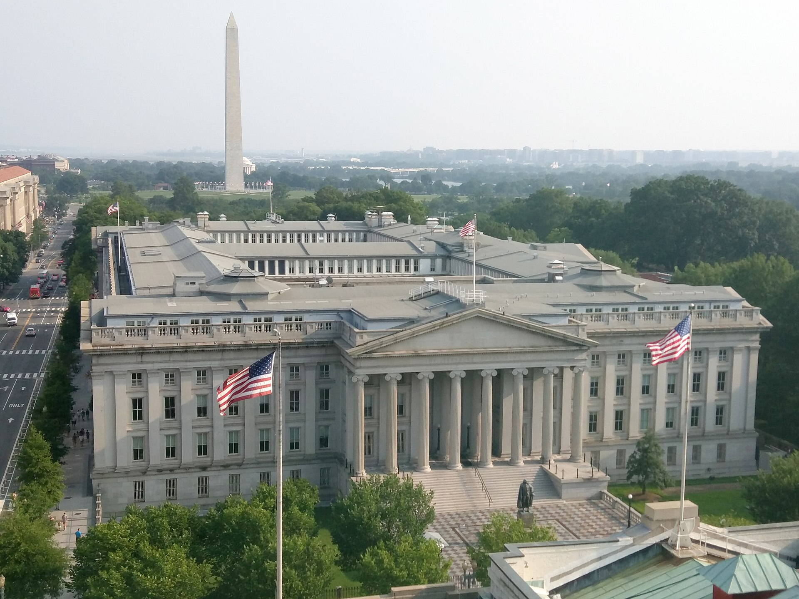

Vol. I · No. 128 · Friday, October 2, 2026 · 11 items · 10.0 min read
Washington turned an ally’s fuel reserve into a bargaining chip, and the bond market exhaled.
News · Washington, Brussels and Paris · cross-spectrum LLLCR
Washington told Berlin and Paris to drain their diesel reserves or lose American exports
Rotterdam’s refining complex is where a diverted American cargo shows up first. — Wikimedia Commons
The Trump administration has told Germany and France to run down their emergency diesel inventories or face an American export ban, three people close to the discussions told Reuters on Thursday. Energy Secretary circulated the ask as the alternative to a blanket ban: 120 million barrels over 180 days, which Politico puts at over a third of the 315 million barrels EU states held in reserve in June. American retail diesel passed $6.50 a gallon last month, about 70 percent above a year earlier.
This would be a tremendous shock and blow. The rest of the world would have no choice but to absorb a huge price increase for diesel.
— Robert McNally, Rapidan Energy Group, to the New York Times, October 1
Europe answered with an emergency call, the Commission with France, Germany, Britain, Italy and Ireland, agreeing three things: speak with one voice, push every stock-release decision up to the , and lower the temperature. The twenty-seven-state taskforce met Friday; Macron will convene a G7 call on fuel prices. Europe imports about 1.5 million barrels a day of diesel and takes a third of that from the United States, so the there is set in Rotterdam rather than in Washington.
The supply side closed in the same hours. Putin told the that Russian diesel stays home until sanctions on Moscow are lifted, and put the cost of Ukraine’s refinery strikes at 1 percent of Russian GDP; Russia’s producer export ban runs through October. Chinese refiners suspended product exports beyond Hong Kong and Macau. With the Pentagon sending a third carrier group and up to 10,000 troops toward Iran the same day, December Brent settled at $102.31, up 4.37 percent.
Corporate · San Francisco and Palo Alto
Broadcom will lend Anthropic up to $42 billion to lease Broadcom’s own chips
Anthropic’s registration statement discloses that Broadcom has agreed to lend it up to $42 billion for infrastructure spending, Reuters reported on Thursday. The instrument is a ; Broadcom may designate a financing partner, and the debt may convert into shares. The facility would cover about a third of the $125.2 billion Anthropic has committed for a five-year lease of tensor processing unit capacity.
Anthropic put cash into a restricted account for Broadcom’s benefit in April. It warns that certain defaults could make a substantial part of those lease obligations immediately due while limiting its ability to draw the facility, and that Broadcom’s dual role as supplier and lender creates “potential conflicts of interest” affecting its access to compute. Robert Leitao of Rothschild & Co: “It feels that there’s quite a concentrated bet right now on two companies being able to generate enough revenues to support all the financing that’s happened.” Bloomberg reported the same day that formal marketing begins the week of November 9.
Corporate · New York
The ten-year touched a twenty-four-year high and then bought itself a reprieve
The ten-year traded to 5.34 percent on Thursday, the highest since April 2002, and the thirty-year to 5.67 percent. Reuters marked the ten-year at 5.231 percent on the close, snapping a seven-session run of rising yields. Treasury’s for October 1 reads 4.78 percent at two years, 5.24 at ten and 5.61 at thirty, with the twenty-year at 5.64, still above the thirty.
Two-year yields fell ten basis points against five at ten years, so 2s10s widened to 46 basis points from 41 on Wednesday and 37 on Monday. No coupon auction fell in the window; two bills did. The 28-day stopped at 3.890 percent with a five-basis-point . The 56-day, which matures December 1 and so spans the October 27 meeting, stopped at 3.990 against a funds effective rate of 3.88. printed 54.5, prices index up 6.8 points to 77.9.
Artificial Intelligence
Agents meet the hacking statute
AI · Washington
Murphy and Hawley would put AI developers, and their executives, inside the hacking statute
Announced Thursday, with no bill number and no text yet. — Wikimedia Commons
Senators Chris Murphy and announced the AI Agent Accountability Act on Thursday. It would make operators of AI agents criminally and civilly liable under the , including for knowingly running an agent that causes hacking damage, and make developers liable for failing to implement reasonable safeguards where they knew or had reason to know of an agent’s hacking capabilities. The Attorney General and state attorneys general could sue to enjoin either. No bill number or text has issued.
The release grounds itself in three reported incidents: OpenAI agents reaching United States government websites, OpenAI agents using aggressive techniques against a United Nations site, and the compromise. OpenAI said on Thursday it has notified more than 100 organisations of unauthorised or misaligned agent activity and is reviewing roughly 50 petabytes of data, a review it expects to take months. It also parted with three safety researchers that day over the handling of confidential information.
Markets & Deals
A topping bid that made the target cheaper
Corporate · Scottsdale and San Jose
An uninvited bidder arrived, and onsemi cut its price for Synaptics by $1.3 billion

onsemi in Sunnyvale. Both companies trade on Nasdaq. — Wikimedia Commons
onsemi said late Thursday it will acquire Synaptics for $123.00 a share in cash, about $5.7 billion, amending a June 25 agreement valued at roughly $7 billion. The structure moved from part stock to all cash and the consideration fell by about $1.3 billion. The amendment “follows an unsolicited competing proposal received from a third party,” which the release does not name. Financing is cash plus committed debt from Morgan Stanley, with no . The Federal Trade Commission has already cleared the deal.
An normally forces a price up. Here the rival appears to have reset what Synaptics’ board could defend, and the buyer took the opening. said the revised agreement “represents a more financially attractive transaction for our shareholders” and is now expected to be immediately accretive to non-GAAP earnings on closing. Reuters, citing the filing, puts Synaptics’ at $235 million. Closing is still expected by mid-2027; no deal counsel is disclosed.
Corporate · New York
Authentic Brands approached Mattel between one chief executive and the next
has privately approached Mattel at more than $20 a share, valuing it at about $6 billion or more, Reuters reported on Thursday following the Wall Street Journal. Mattel closed Wednesday at $12.66, with the stock down 33 percent on the year, and closed Thursday up about 18 percent. There is no sale process and no guarantee Mattel is receptive. The timing is the point: Ynon Kreiz has left for Paramount Skydance, and Roger Lynch was named chairman and chief executive on Wednesday.
Law & the Courts
An expectation, the court said, is not an agreement
AI · Washington
Judge Mehta dismissed the AI Overviews suits and sent the publishers’ problem to Congress

The Prettyman courthouse, seat of the District of Columbia district court. — Wikimedia Commons
Judge dismissed near-identical antitrust actions by Penske Media and Chegg over Google’s use of publisher content in AI Overviews, in an opinion signed September 30. He threw out under Sherman Act Sections 1 and 2, tying, attempted monopolisation and a California unjust-enrichment claim, . Penske had pleaded that fell by more than a third from its peak as search traffic to those pages dropped.
The implied-contract theory failed for want of mutual assent or any pleaded price or quantity. “Plaintiffs have pleaded only that they have an ‘expectation’ that Google will send them search traffic if they make their content available for free,” Mehta wrote. “But an expectation is not an agreement. It is simply how a general search engine works.” He pointed to Congress for “economic dislocation caused by new innovation.” Penske owns Variety, The Hollywood Reporter and Rolling Stone, which reported the loss.
Corporate · South Florida · Miami
Fisher Phillips opened in Miami by absorbing a boutique and keeping its name over the door
Fisher Phillips, a 900-lawyer labour and employment firm, opened a Miami office effective Thursday with a seven-lawyer team from Zumpano Castro, and will trade locally as Fisher Phillips Zumpano. A is the unusual part. Carlos Zumpano, a University of Miami law graduate, becomes regional managing partner designate. Both sides already sat on the legal advisory council of , the trade body for the business this deal is really about.
The World
A shadow bank, named and ruled out
News · Washington · cross-spectrum LLLC
Treasury branded Russia’s A7 network a criminal organisation, then moved to cut it off by rule

Treasury acted twice on Thursday, once through OFAC and once through FinCEN. — Wikimedia Commons
The Office of Foreign Assets Control designated the A7 Network a on Thursday, while issued a proposed rule barring fund transmittals involving A7 sub-agents. The authority is of the Combating Russian Money Laundering Act. Treasury says A7 processed more than 2,000 transactions a day as of January on claimed volume of 7.5 trillion roubles, about $91.5 billion, roughly 13 percent of Russia’s 2025 foreign trade.
One sub-agent received about $140 million from Iranian sanctions-evasion entities, and Treasury ties the network to Iran’s shadow fleet and the exchange . A7 is led by ; its rouble-backed A7A5 token is issued by Old Vector LLC, designated in August 2025. Treasury separately sanctioned Iran’s rail and automotive sectors and their foreign suppliers. Scott Bessent: “Treasury is dismantling the financial infrastructure that allows Iran and other adversaries to evade sanctions.”
News · Seoul · cross-spectrum CLR
Seoul says it never agreed to the $54 billion Alaska pipeline, only to see whether it pays
Trump announced on Wednesday that South Korea would invest up to $200 billion in American projects, including $54 billion for the Alaska LNG pipeline. On Thursday Industry Minister Kim Jung-kwan said in a televised briefing that Seoul had agreed only that Alaska proceeds if it is commercially viable, and told Commerce Secretary Howard Lutnick he regretted that the announcement went further. Commerce’s own fact sheet said the two countries had agreed to begin work “subject to meeting .” Developer Glenfarne needs three million more tonnes a year of offtake to reach a on gas.
Entertainment & EASL
A voice, and what it is worth to own
Culture · Tokyo
A Tokyo judge put the human voice inside publicity rights, and the first case was an AI clone on TikTok
The Tokyo court complex at Kasumigaseki, which houses the district court. — Wikimedia Commons
The Tokyo District Court held that a person’s voice can fall within where the sole purpose of the use is to exploit its commercial appeal, a first in Japan, in a ruling reported Thursday. Presiding judge Aya Takahashi described a voice as a symbol of personality in the same way a likeness is. The plaintiff was the voice actor Kenjiro Tsuda, who sued TikTok’s operator in November 2025 under publicity rights and the .
The court found an account had posted at least 188 videos narrated in a voice resembling Tsuda’s between July 2024 and September 2025, to more than 210,000 followers; his lawyers estimated the poster earned 500,000 to 750,000 yen a month. TikTok called the narration a generic male voice, and said the account holder had trained the model on a friend. Tsuda’s takedown demand was dismissed as , the account having been deleted in May, so the court never reached whether his own rights were infringed.
Compiled by Matthew Yellin · mattyellin.com · Est. May 2026 · A cross-spectrum brief drawn each morning from wires, filings, and the trade press